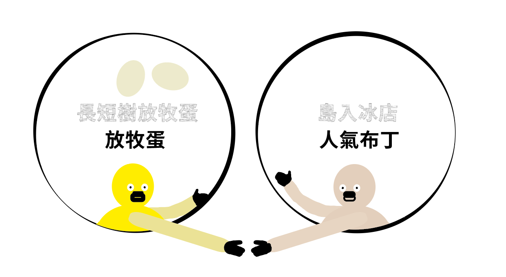

前往➜
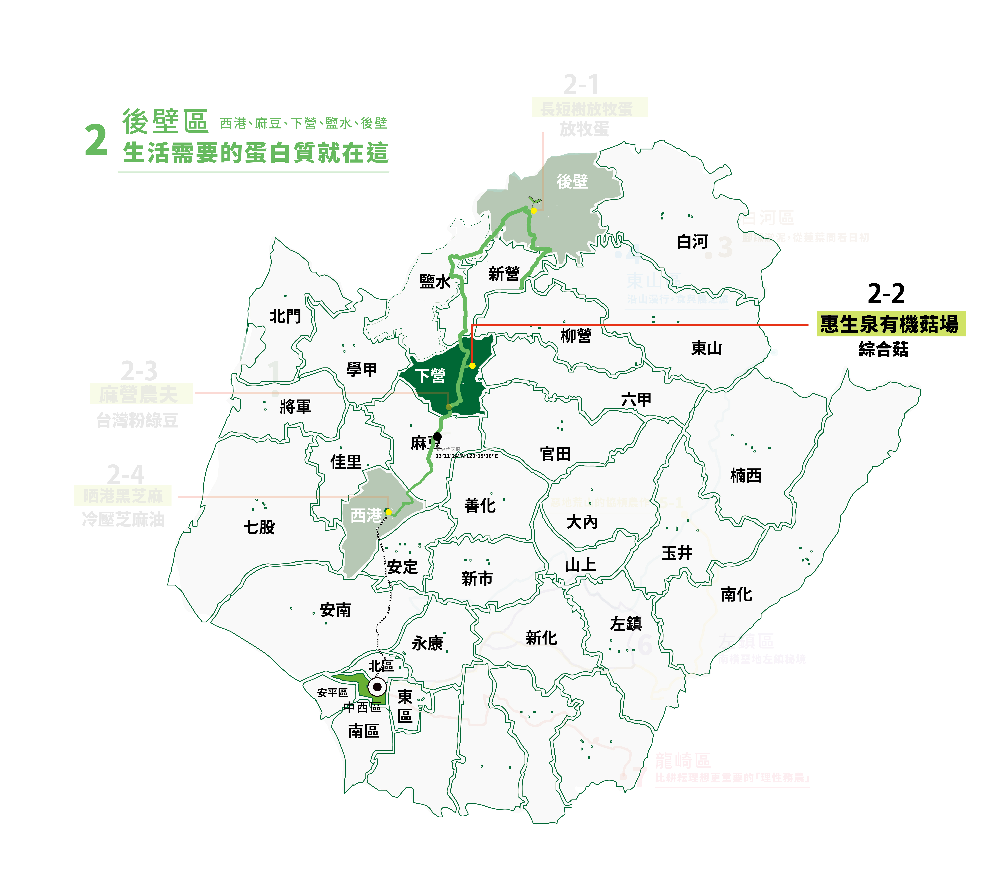
放牧、友善、人道」是這家二代共同經營的農場對動物的善念，擁有「友善雞蛋聯盟」認證，以及取得「動物福利」的肯定，這般以雞為本的態度，從硬體環境、飲食控制、回饋機制等整體的規劃，各方面植入「友善」的精神，成就了在嘉南平原上獨樹一格的快樂雞場。
雞自幼到成雞都在幸福環境下成長，享受自由自在的生活空間，白天可曬日光砂浴、夜晚有專屬棲架床位，天天飲食均衡，所產下的每一顆蛋，都是一隻雞的祝福。
✧ 地點：臺南市後壁區長短樹里10鄰長短樹96號
✧ 電話：0926-999-776
✧ 網站（含社群）：https://www.changduanshu.com/
✧ 開放時間：11:00 - 17:00
✧ 小提醒：參訪務必事先聯繫。"
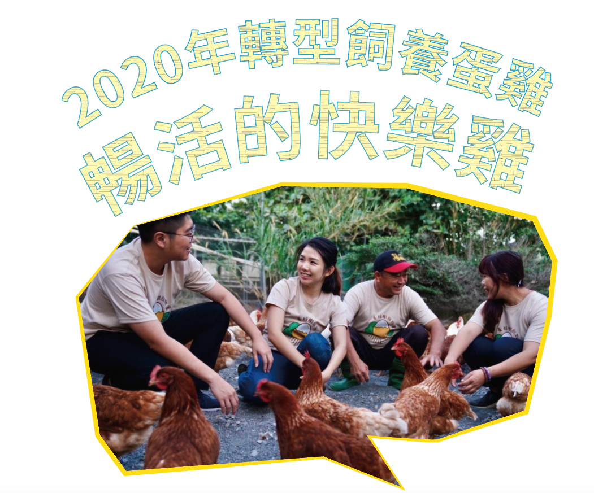
30年前還在飼養土雞時，已經給雞隻搭棲架、設置砂浴區等友善飼養方式，2020年轉型飼養蛋雞，便延續友善精神。
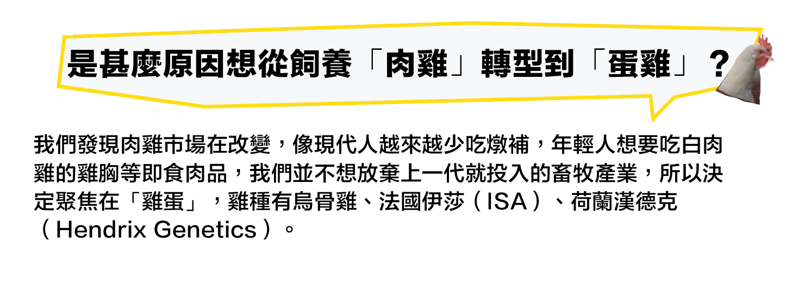
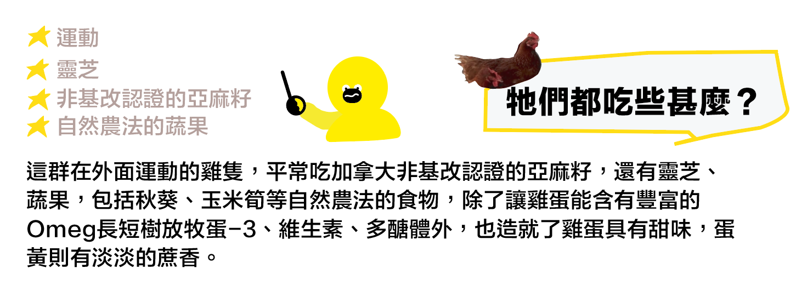
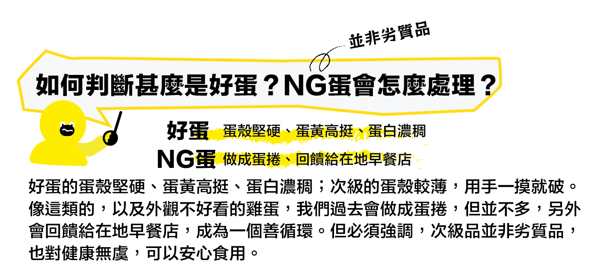
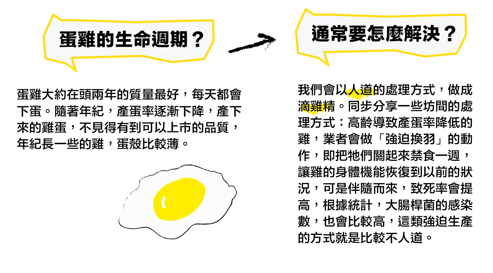
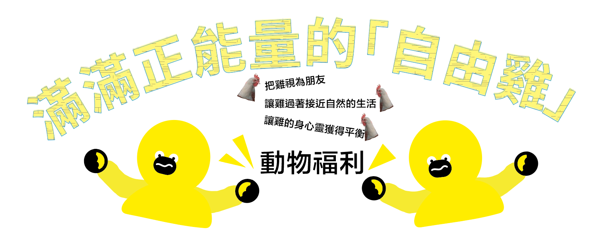
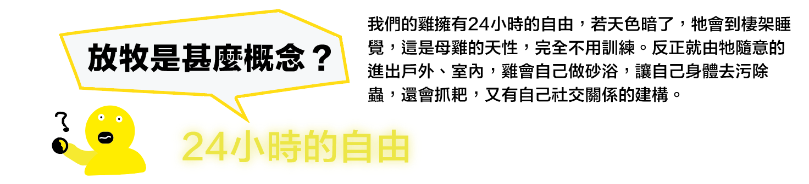
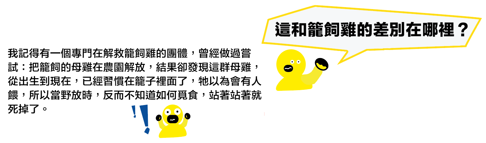
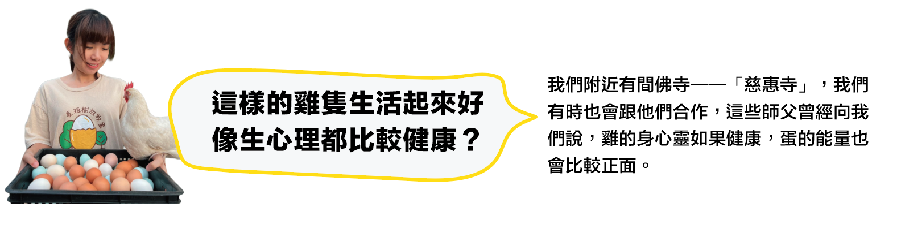
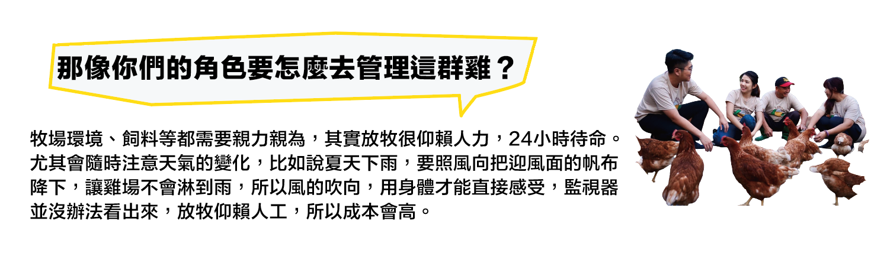
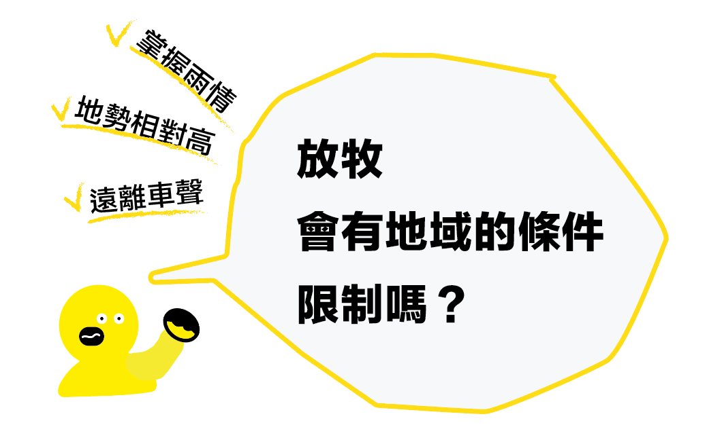
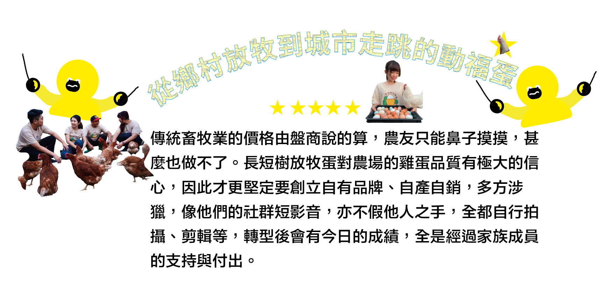
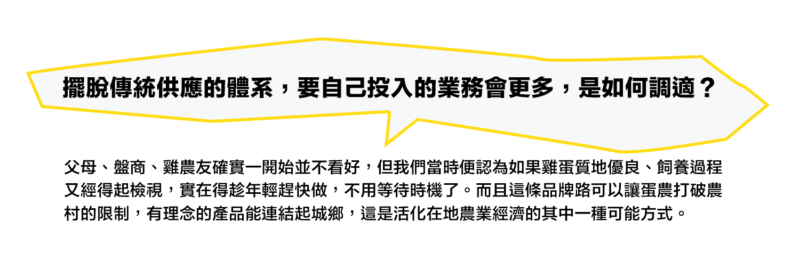
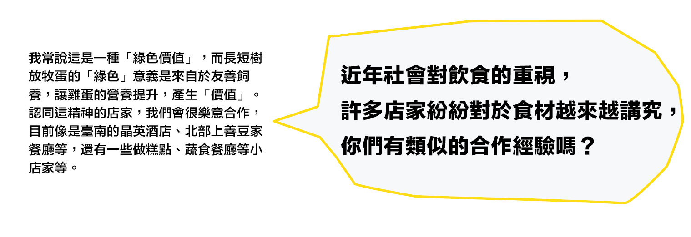
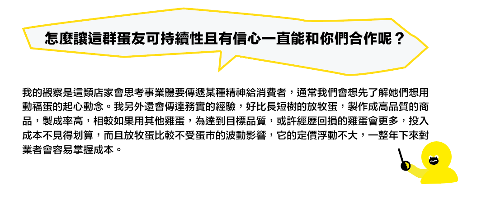

前往➜